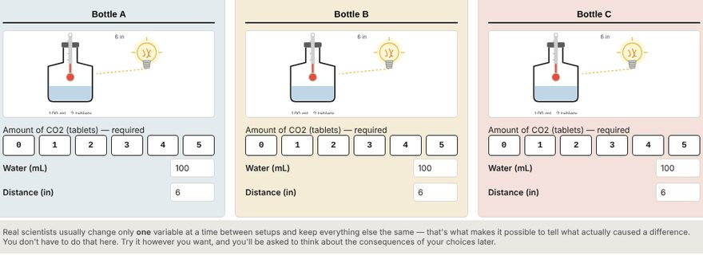
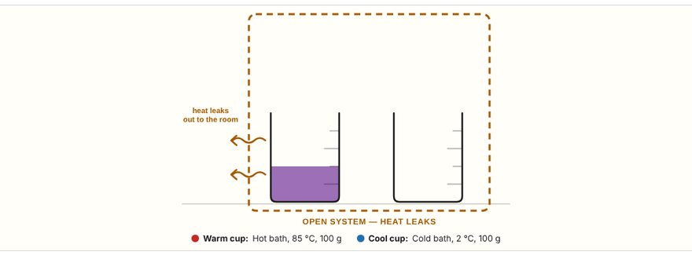
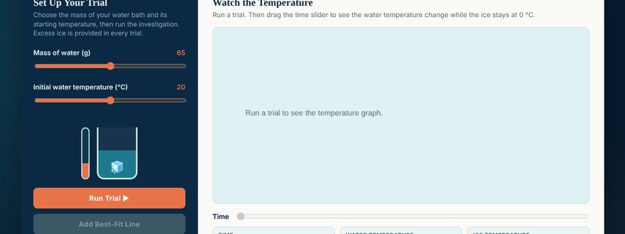
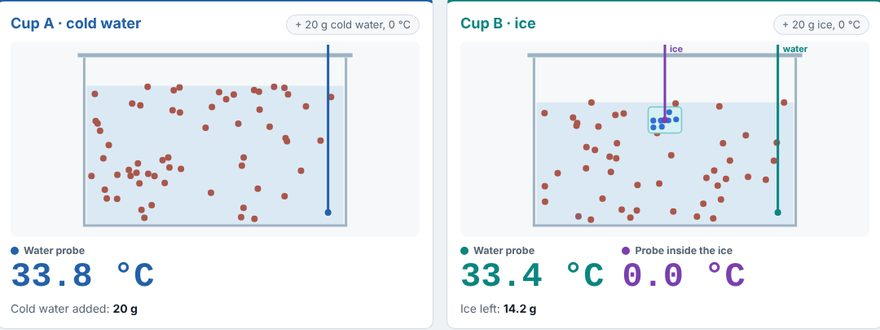
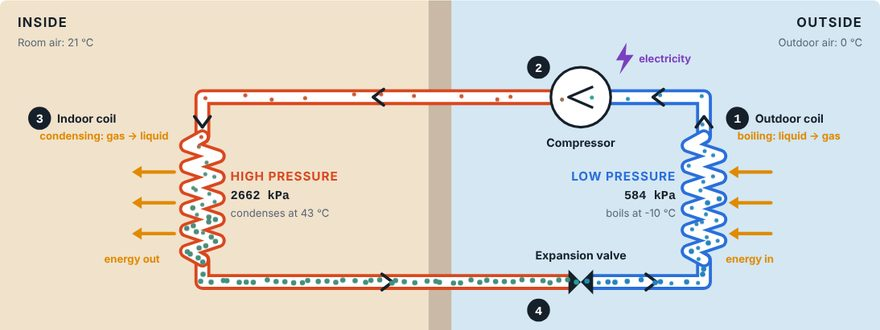
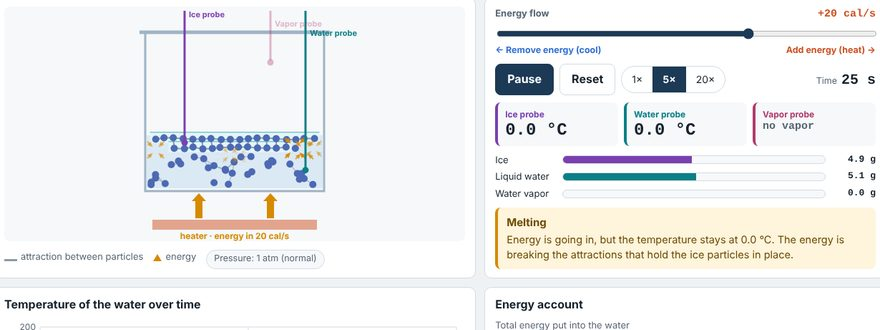
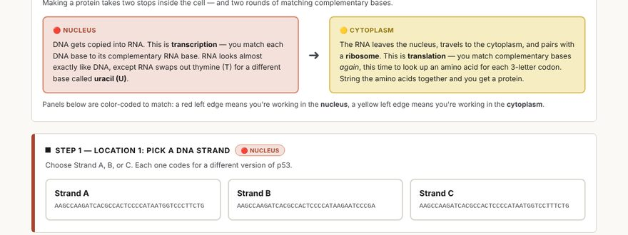
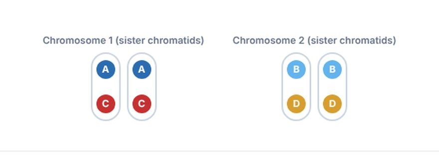
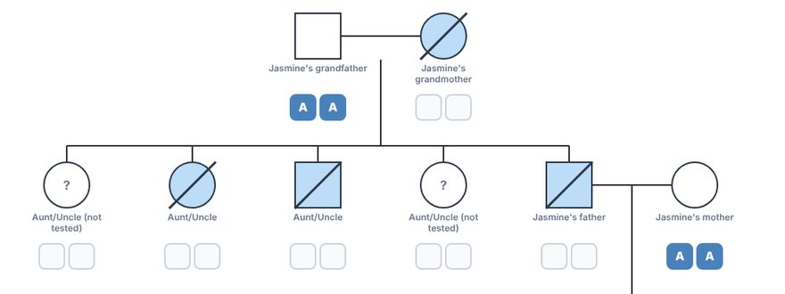
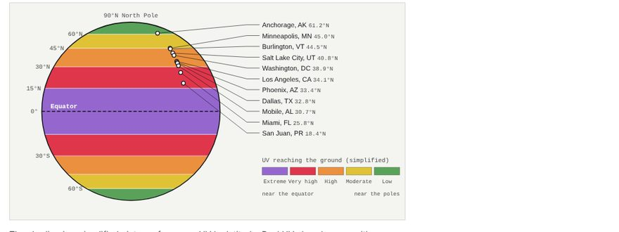

Not indexed — direct link only
Investigation Simulators
All the interactive investigation simulators in one place, organized by subject. Bookmark this page — it's the one link you need for any of these.
Science Skills
1 simulatorChemistry
9 simulators
Climate & CO2CO2 Investigation Simulator
How CO2, distance from a heat source, and water volume affect temperature change.
Open simulator
Español
Climate & sea level
Rising Seas: Who Has to Move?
Follow the chain from CO2 to warming, melting land ice, and rising seas. Flood maps of four coastal places and calculate how many people would have to move. Starts with a Units Lab on dimensional analysis. English & Español.
Open simulator

Energy transferEnergy Transfer Investigation Simulator
Mixing warm and cool water — conservation of energy and Q = cmΔT.
Open simulator

Latent heatWater-Ice Investigation Simulator
Melting ice with warm water to find the latent heat of fusion from real data.
Open simulator

Latent heatIce vs. Cold Water Lab
Add ice or the same mass of 0 °C cold water to warm water — which cools it more, and where does the energy go?
Open simulator
Español
Heating curve
Ice to Boiling Simulator
Heat a block of ice until it melts and boils, and watch the temperature graph draw itself — flat while it melts, flat while it boils.
Open simulator
Español
Pressure & boiling
Boiling Point Investigation Simulator
Change the air pressure and boil water to find how pressure controls boiling temperature — the idea behind a heat pump.
Open simulator

Heat pumpsHeat Pump Simulator
Follow refrigerant particles as they boil, get compressed, condense, and expand. See how pressure lets a heat pump pull energy out of cold air. Simple and full versions, heating and cooling. English & Español.
Open simulator

Phase changesPhase Change Simulator
Heat and cool water through all six phase changes — melting to deposition — with particles, temperature probes, and energy arrows. English & Español.
Open simulator
Biology
6 simulators
Español
Cell cycle
Cell Cycle Simulator
Two-player board game — move through the cell cycle and hit p53 checkpoints.
Open simulator

Protein synthesisp53 Protein Synthesis Simulator
Transcribe and translate a DNA strand yourself — the simulator checks your work.
Open simulator

MeiosisMeiosis & Crossing Over Simulator
Replicate, cross over, and divide Dad's chromosome 17 to see how new p53/BRCA1 combinations arise.
Open simulator

GeneticsPedigree & Allele-Tracing Simulator
Punnett square basics, a mutation twist, then the real p53 pedigree in Jasmine's family.
Open simulator

UV & cancerUV & Latitude Investigation Simulator
Real CDC and NOAA data — predict, explore, and test whether latitude and UV actually explain who gets skin cancer.
Open simulator
Español
UV & cancer
Yeast & UV Investigation Simulator
Plate UV-sensitive and wild-type yeast, test sunscreen, fabric, foil, or time in the sun, then count the colonies that grew.
Open simulator